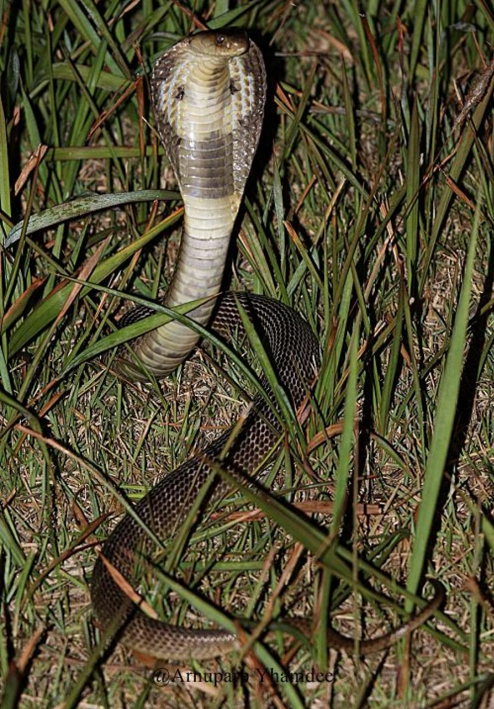
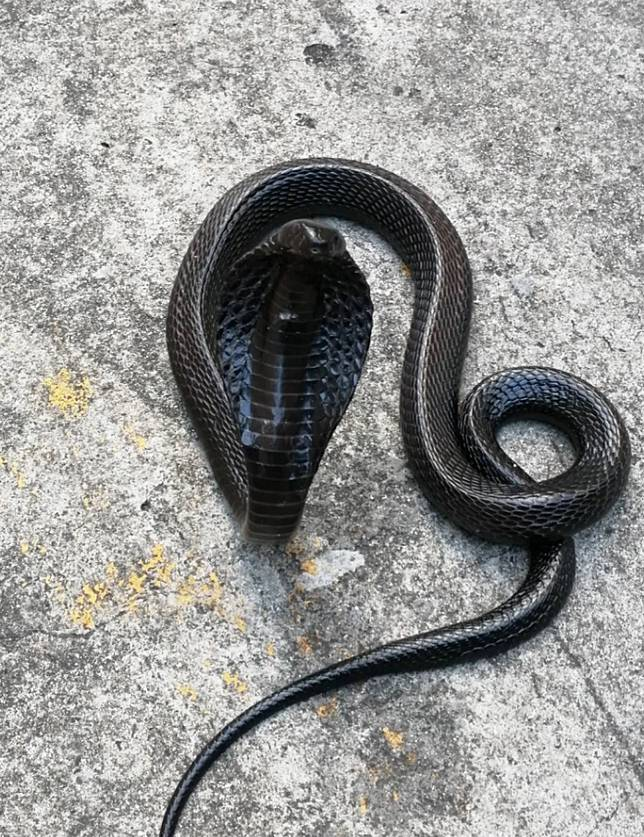

.jpg)
.jpg)
งูเห่าพ่นพิษสยาม (Indo-Chinese Spitting Cobra)
ชื่อวิทยาศาสตร์: Naja Siamensis
ลักษณะทั่วไป
เป็นงูพิษขนาดกลางที่มีความโดดเด่นทางสรีรวิทยาและพฤติกรรมการป้องกันตัว การจัดลำดับอนุกรมวิธานในอดีตเคยถูกจัดเป็นชนิดเดียวกับงูเห่าหม้อ (Naja kaouthia) ก่อนจะถูกแยกเป็นชนิดเฉพาะตัวเนื่องจากโครงสร้างเขี้ยว ลายแม่เบี้ย และความสามารถในการพ่นพิษ ตัวเต็มวัยมีความยาวเฉลี่ย 90–120 เซนติเมตร (อาจพบยาวได้ถึง 150–160 เซนติเมตรในบางพื้นที่) ลำตัวค่อนข้างหนา ป้อม และสั้นกว่างูเห่าไทยปรกติ เลื้อยคล่องแคล่วบนพื้นดินแต่ไม่ถนัดปีนป่ายขึ้นที่สูง หัวกลมมน ไม่ขนานแยกออกจากคอชัดเจนจนกว่าจะทำการแผ่แม่เบี้ย (Hood) ดวงตามีขนาดปานกลาง รูรูม่านตากลม (Circular pupil) งูเห่าพ่นพิษสยามมีความผันแปรของสีสันบนลำตัว (Polymorphism) สูงมากตามภูมิภาค โดยมีรูปแบบที่แตกต่างกันหลักๆอยู่ 3 รูปแบบ ได้แก่ รูปแบบสีนัำตาล (รูปที่ 1 เป็นรูปแบบที่พบบ่อยที่สุด หนักไปทางภาคอีสาน) รูปแบบสีดำนิล (รูปที่ 2 พบมากในแถบภาคตะวันตก ใกล้ชายแดนพม่า เช่น กาญจนบุรี) และรูปแบบสีด่าง (รูปที่ 3 พบชุกชุมในภาคกลางและกรุงเทพมหานคร) เมื่อยกคอขึ้นแผ่แม่เบี้ย ด้านหลังของคอจะปรากฏลายดอกจันที่มีความแตกต่างจากงูเห่าไทยอย่างชัดเจน โดยจะปรากฏได้ทั้งลายรูปตัว U, รูปตัว V, ลายแว่นตาสองวงเชื่อมกัน (คล้ายงูเห่าอินเดีย), ลายขีดแบบไม่เป็นรูปทรงแน่นอน หรือบางรูปแบบ(เช่นรูปแบบสีนิล)อาจไม่มีลายดอกจันเลย จุดเด่นที่สำคัญที่สุดคือโครงสร้างของ เขี้ยว (Fangs) ซึ่งถูกสร้างมาเพื่อการยิงพิษโดยเฉพาะ ช่องเปิดของรูพิษตรงปลายเขี้ยวจะโค้งหักมุมออกมาทางด้านหน้า (ต่างจากงูเห่าธรรมดาที่รูเปิดจะเจาะลงด้านล่างตรงๆ) เมื่อถูกคุกคาม มันจะเกร็งกล้ามเนื้อรอบบีบต่อมพิษอย่างรุนแรง พ่นน้ำพิษฉีดผ่านรูเขี้ยวออกมาเป็นเส้นตรงพุ่งไปข้างหน้าได้ไกล 1 ถึง 2 เมตร โดยเน้นเล็งไปที่บริเวณใบหน้า โดยเฉาะดวงตาหรือช่องปากของศัตรูเพื่อหยุดยั้งภัยคุกคามทันที งูเห่าพ่นพิษสยามเป็นสัตว์กินเนื้อ (Carnivore) ที่ล่าสัตว์ขนาดเล็กเป็นอาหาร โดยจะกินหนูชนิดต่างๆ (อาหารหลักที่ทำให้พวกมันมักเลื้อยเข้ามาใกล้บ้านเรือนหรือพื้นที่เกษตรกรรม), กบ, เขียด, อ่าง และคางคกเป็นอาหารหลัก
ถิ่นอาศัย พิษ และความอันตราย
- ถิ่นอาศัย: งูเห่าพ่นพิษสยามมีถิ่นกำเนิดในภูมิภาคเอเชียตะวันออกเฉียงใต้ โดยพบกระจายพันธุ์ได้เกือบทุกภูมิภาค ได้แก่ ภาคเหนือ ภาคกลาง ภาคตะวันออกเฉียงเหนือ (อีสาน) และภาคตะวันออก โดย จะไม่พบในพื้นที่ภาคใต้ (ซึ่งพื้นที่ภาคใต้จะเป็นถิ่นอาศัยของงูเห่าสุมาตรา หรือ Naja sumatrana แทน) นอกจากนี้ยังพบกระจายตัวอยู่ในประเทศลาว กัมพูชา และเวียดนาม งูเห่าพ่นพิษสยามชอบอาศัยอยู่ในพื้นที่ระดับต่ำถึงระดับปานกลาง (Lowland and Upland) โดยจะพบได้ตั้งแต่ป่าโปร่งและป่าผลัดใบ ยันพื้นที่เกษตรกรรมและเขตชุมชน
- พิษ:พิษของงูเห่าพ่นพิษสยาม (Naja siamensis) จัดเป็นพิษร้ายแรงที่มีความซับซ้อน เนื่องจากประกอบด้วยสารชีวพิษหลัก 2 กลุ่ม ทำงานร่วมกันส่งผลทั้งต่อระบบประสาททั่วร่างกายและทำลายเนื้อเยื่อบริเวณบาดแผลโดยตรง โดยพิษจะออกฤทธิ์ทำลายระบบประสาท (Neurotoxic) เป็นหลัก ออกฤทธิ์ขัดขวางการทำงานของสารสื่อประสาท (Acetylcholine) บริเวณตัวรับที่กล้ามเนื้อลาย (Post-synaptic acetylcholine receptors) ส่งผลให้กระแสประสาทไม่สามารถสั่งงานกล้ามเนื้อได้ ทำให้กล้ามเนื้อทั่วร่างกายเกิดอาการอ่อนแรงและเป็นอัมพาต นอกจากนี้พิษยังส่งผลต่อเนื้อเยื่อส่วนที่ถูกกัดโดยตรง (Cytotoxic/Cardiotoxic) ทำลายเยื่อหุ้มเซลล์ (Cell membrane) บริเวณที่ถูกกัดโดยตรง ทำให้เซลล์ตายและเกิดการอักเสบอย่างรุนแรง ส่งผลให้เนื้อเน่า (Tissue necrosis) และอาจกระตุ้นให้เกิดภาวะหัวใจทำงานผิดจังหวะได้ในกรณีรับพิษปริมาณมาก หากพิษซึมเข้าสู่กระแสเลือด จะเริ่มแสดงอาการตั้งแต่ หนังตาตก (Ptosis) เป็นสัญญาณแรกที่ชัดที่สุด มักมาพร้อมกับอาการง่วงซึม น้ำลายไหล ย้อนกลืนลำบาก พูดไม่ชัด หรือมองเห็นภาพซ้อน ตามมาด้วยอาการกล้ามเนื้อใบหน้าและคออ่อนแรง แขนขาเริ่มไม่มีแรง ยกศีรษะไม่ขึ้น หนักสุดคือพิษเข้าทำลายกล้ามเนื้อกะบังลมและกล้ามเนื้อยึดซี่โครง ทำให้ระบบหายใจล้มเหลว (Respiratory failure) และตายในที่สุด กรณีถูกพ่นพิษใส่ตาจะทำให้ปวดแสบรุนแรง ตาแดง เยื่อบุตาอักเสบ น้ำตาไหลไม่หยุด และไม่สามารถลืมตาต้านแสงได้ สารพิษ Cytotoxin จะกัดกร่อนกระจกตา เกิดแผลเปื่อยบนกระจกตา (Corneal ulceration) หากไม่รีบล้างออกด้วยน้ำสะอาดปริมาณมากทันที อาจเกิดการติดเชื้อซ้ำซ้อนและส่งผลให้ ตาบอดถาวร
- ระดับความอันตราย: โคตรอันตราย ☠☠☠☠☠: เป็นงูพิษอันตรายที่พบได้บ่อยมาก ปรับตัวเข้ากับสิ่งแวดล้อมที่ถูกรบกวนได้ดีเยี่ยม มักเข้ามาหากินหนูใกล้บ้านเรือน กองไม้ โพรงใต้บ้าน หรือนาข้าว จึงมีโอกาสที่คนทั่วไปจะเดินไปเผชิญหน้าโดยไม่ตั้งใจสูงมาก แถมยังสามารถพ่นพิษฉีดใส่ตาได้ไกล 1–2 เมตรโดยไม่ต้องรอให้เราเข้าใกล้ในระยะฉกกัด จึงอันตรายอย่างมาก
Fun Fact
- พ่นพิษได้แม่นยำแม้ในความมืดมิด: งูเห่าพ่นพิษสยามไม่ได้เล็งเป้าด้วยสายตาเพียงอย่างเดียว แต่มันใช้วิธีจับการเคลื่อนไหวและการจดจำตำแหน่งดวงตาของศัตรูอย่างรวดเร็ว ก่อนจะเกร็งกล้ามเนื้อบีบต่อมพิษยิงเล็งไปที่ "บริเวณดวงตา" ของเหยื่อหรือสิ่งคุกคามโดยตรง เพื่อทำให้ศัตรูสูญเสียการมองเห็นทันที
- ลายด่างฉูดฉาด ไม่ใช่โรคผิวหนัง: ในแถบภาคกลางของไทย งูชนิดนี้มักมีลำตัวเป็นลายด่างสีขาว สลับเทาหรือดำ จนทำให้ชาวบ้านเรียกกันติดปากว่า "งูเห่าขี้เรื้อน" เพราะผิวดูขรุขระเหมือนเป็นโรคผิวหนัง แต่แท้จริงแล้วมันคือลายตามธรรมชาติ (Polymorphism) ไม่ใช่ความผิดปกติหรือโรคแต่อย่างใด
- fast shooting, fast reloading: งูเห่าพ่นพิษสยามสามารถพ่นพินได้หลายสิบครั้งติดต่อกัน เมื่อพิษหมด มันสามารถเติมพิษใหม่ได้อย่างรวดเร็วใน 10 นาที